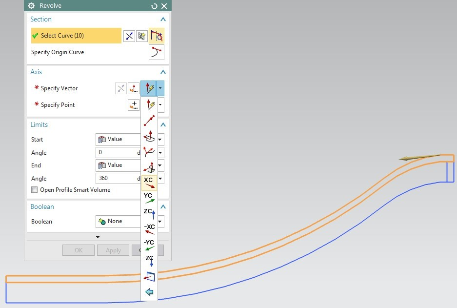
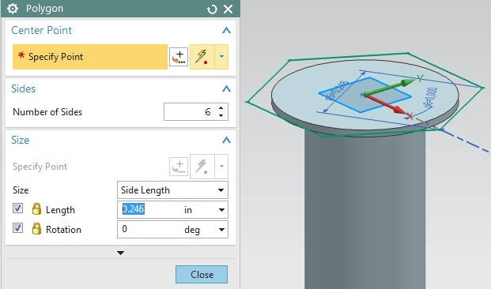
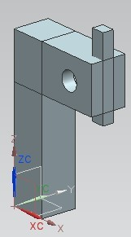
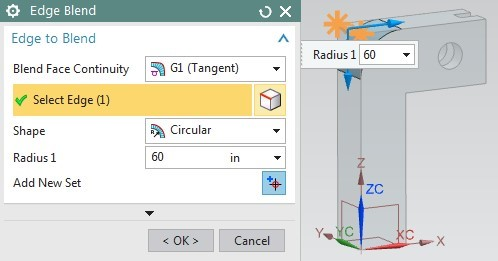
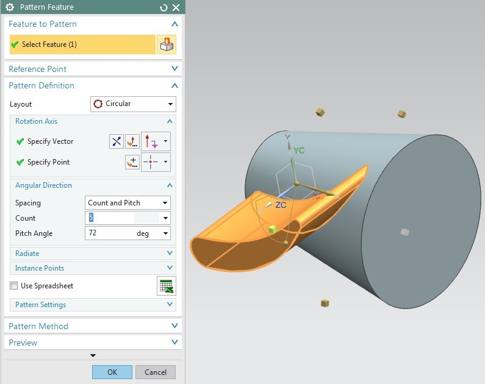
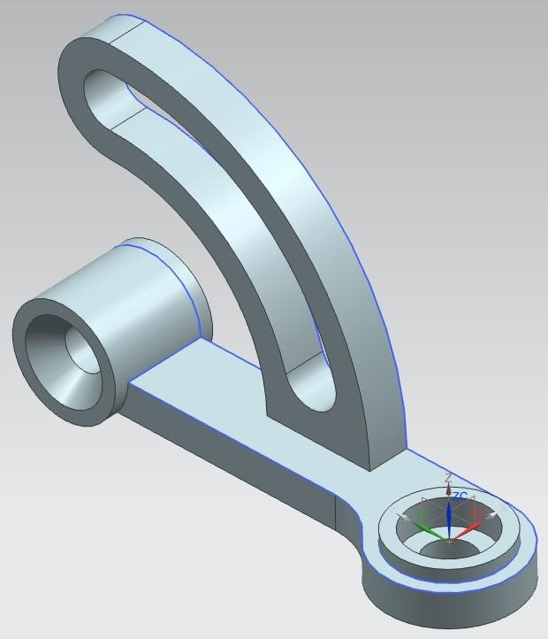

第三章 2D草圖 <<
Previous Next >> 第五章
第四章 三維建模
本章討論了NX 12中的三維（3D）建模的基礎。我們將討論什麼是要素，
什麼是不同類型的要素，什麼是原語以及如何使用原語在NX 12中對要素進行建模。
這將使NX 12的建模部分搶先一步，並加深了對3D建模使用Form Features的理解。
引入這些特徵後，我們將集中於特徵操作，這些功能可以應用於實體的面和邊緣或您創建的特徵。
其中包括錐度，邊緣融合，面融合，倒角，修剪等。在解釋了功能操作之後，本章將引導您完成一些示例。
在NX 12中，要素是具有已定義父項的一類對象。特徵是由一個或多個父代關聯定義的，
其創建和修改的順序保留在模型中，從而通過“歷史記錄”將其捕獲。父對象可以是幾何對像或數字變量。
特徵包括圖元，表面和/或實體以及某些線框對象（例如曲線和關聯的修剪和橋曲線）。
例如，一些常見的特徵包括塊，圓柱體，圓錐體，球體，擠壓體和旋轉體。
常用功能可以分類如下：
-實體：一類包含實體和圖紙的對象
-實體：包含一定體積的面和邊緣的集合
-圖紙主體：一個或多個不包含體積的面的集合
-臉部：主體外部的區域，被邊緣包圍
4.1功能類型
表單功能有六種類型：基元，參考功能，掃描功能，刪除功能，提取功能和用戶定義的功能。
與以前的版本類似，NX 12在“插入”菜單選項下存儲所有“表單功能”。 表單功能也可在“表單功能”工具欄中找到。
➢單擊菜單上的插入
如您所見，右側圖中標記的菜單包含“表單功能”的命令。
表單功能圖標在主頁工具欄中分組，如下所示。 您可以選擇經常使用的圖標。
➢單擊主頁工具欄中的下拉箭頭
➢選擇功能組

4.1.1基元使用它們可以創建通用建築形狀形式的實體。 基元包括：
•塊
•圓柱體
•圓錐體
•球形圖元
是主要實體。 因此，我們將從對基元的簡短描述開始，然後再對各種對象進行建模。
4.1.2參考要素這些要素使您可以創建參考點，參考軸，參考平面或參考坐標，這些參考點可用於構造其他特徵。
➢單擊菜單→插入→基準點/點或單擊功能區欄中特徵組中的基準平面以查看不同的參考特徵選項：
基準平面，基準軸，基準CSYS和點
4.1.3掃掠特徵這些特徵使您可以通過拉伸或旋轉截面來創建實體。
掃描功能包括：
•拉伸的實體
•旋轉的實體
•沿導向線掃掠
•管
•樣式掃掠要選擇掃掠特徵
可以執行以下操作：
➢單擊插入→設計拉伸和旋轉特徵，或單擊功能區欄中特徵組中的拉伸。
➢單擊插入→掃描或在功能區欄中的功能組中單擊更多，以找到所有可用選項，包括掃描
4.1.4移除特徵移除特徵允許您通過從其他零件移除實體零件來創建實體。
➢單擊插入→設計特徵
刪除功能包括：
•孔
•口袋
•插槽
•凹槽
4.1.5提取特徵這些特徵使您可以通過提取曲線，面和區域來創建實體。
這些功能在“關聯複印”和“偏移/縮放”菜單下有很大的間距。
提取功能包括：
•提取
•實體到殼體
•加厚板
•有界平面
•曲線中的圖紙
➢單擊“插入”→“關聯副本”→“提取”以提取選項，或單擊功能區欄中“特徵”組中的“更多”以找到“提取幾何”
➢單擊插入→實體/殼和厚板助手的偏移/比例或在功能區欄中的特徵組中單擊更多以找到偏移/比例選項
➢單擊插入→曲線的邊界平面和圖紙的表面
4.1.6用戶定義的功能這些功能允許您創建自己的表單功能，以自動化常用的設計元素。
您可以使用用戶定義的功能來擴展內置表單功能的範圍和功能。
➢單擊插入→設計特徵→用戶定義
4.2基本原則
基本要素是基礎要素，可以從中創建許多其他要素。
基本圖元是塊，圓柱體，圓錐體和球體。 基元是非關聯的，這意味著它們不與用於創建它們的幾何圖形關聯。
請注意，通常使用掃掠特徵來創建基元，而不是此處提到的命令。
➢創建一個新文件並將其命名為Arborpress_plate.prt
➢選擇“插入”→“設計特徵”→“塊”，或單擊“表單特徵”工具欄中的“塊”圖標
出現“阻止”窗口。定義塊主要有三件事，即塊的類型，原點和尺寸。要訪問類型，請滾動“類型”下的下拉菜單。
有三種創建塊基元的方法：
•原點和邊長
•高度和兩個點
•兩個對角點
➢確保選擇了“原點和邊長”方法
現在，我們將使用Point Constructor選擇原點：
➢單擊原點下的點對話框圖標
“點構造器”對話框將打開。 XC，YC，ZC點的默認值應為0。
➢點擊確定
阻止窗口將再次出現。
➢在窗口中輸入以下尺寸
長度（XC）= 65英寸
寬度（YC）= 85英寸
高度（ZC）= 20英寸
➢點擊確定
如果您在屏幕上看不到任何內容，
➢右鍵單擊並選擇FIT。您也可以按<Ctrl> + F
➢右鍵單擊屏幕，然後單擊“東方視圖”→“ Trimetric”
4.2.2建模軸讓我們繼續建模一個軸，該軸使用基本體將兩個圓柱體和一個圓錐體連接在一起。
➢創建一個新文件並將其另存為Impeller_shaft.prt
➢選擇插入→設計特徵→圓柱體，或在功能區欄中的特徵組中單擊更多以在設計特徵部分中找到圓柱體
與“塊”相似，創建圓柱體需要定義三件事：“類型”，“軸和原點”以及“尺寸”。
圓柱可以通過兩種類型定義，可以通過滾動“類型”下的下拉菜單來獲得
•軸，直徑和高度
•弧和高度
➢選擇軸，直徑和高度
➢單擊指定向量旁邊的向量構造器圖標，然後選擇ZC軸圖標
➢單擊“指定點”旁邊的“點對話框”圖標以設置圓柱體的原點
➢將所有XC，YC和ZC坐標設置為0
您可以看到所選點是WCS的原點
➢在窗口的下一個對話框中，鍵入以下值
直徑= 4英寸高度= 18英寸➢單擊確定
➢右鍵單擊屏幕，選擇“定向視圖”→“等軸測”
圓柱體將如右圖所示。現在，我們將在圓柱體的一端創建一個圓錐體。
➢選擇插入→設計特徵→圓錐體，或在功能區欄中的特徵組中單擊更多以在設計特徵部分中找到圓錐體
與“塊”和“圓柱體”類似，有多種創建圓錐體的方法，可以通過在“類型”框中滾動下拉菜單來查看。
•直徑和高度
•直徑和半角
•基部直徑，高度和半角
•頂部直徑，高度和半角
•兩個同軸圓弧
➢選擇直徑和高度
➢單擊指定向量旁邊的向量構造器圖標
➢選擇ZC軸圖標，使矢量指向Z軸正方向
➢單擊“指定點”旁邊的“點構造器”圖標以設置圓柱體的原點。
點構造器窗口將出現。

➢在對話框中選擇“弧/橢圓/球中心”圖標，然後單擊圓柱的頂部圓形邊緣
➢對於輸出坐標，輸入以下值：XC = 0 YC = 0 ZC = 18
➢點擊確定
➢在圓錐窗口中，輸入以下值：
基本直徑= 4英寸頂部直徑= 6英寸高度= 10英寸➢在布爾運算窗口中，選擇團結並選擇圓柱體
➢點擊確定
現在，圓錐將出現在圓柱體的頂部。軸如右圖所示。
現在，我們將在圓錐頂部再創建一個圓柱。
➢重複與之前相同的步驟來創建另一個圓柱體。
向量應指向ZC正方向。在“點構造器”窗口上，再次單擊“中心”圖標，然後將其構造在圓錐體底部的中心點。
圓柱體的直徑應為6英寸，高度應為20英寸。將氣缸與舊結構結合在一起。
4.3參考功能
4.3.1基準平面基準平面是參考特徵，可以用作構造其他特徵時的基礎特徵。
它們有助於在沒有平面的圓柱體，圓錐體，球體和旋轉的實體上創建特徵，並且還有助於以與目標實體的面法線不同的角度創建特徵。我們將遵循一些簡單的步驟來練習參考功能。首先，我們將創建一個從基準面偏移的基準平面，如上圖所示。
➢打開模型Arborpress_plate.prt
➢選擇插入→基準/點→基準平面
單擊“特徵工具欄”中的圖標，如下圖所示，也可以打開“基準平面”對話框。
基準平面窗口允許您選擇選擇方法。但是，如果保留“推斷”選項（也是“默認”選項），
則NX 12足夠聰明，可以根據您選擇的實體來判斷方法。

向量顯示將在其上創建基準平面的正偏移方向。如果選擇了底面，則向量將指向下方，遠離實體。
➢在對話框中將“偏移距離”值設置為15英寸，然後單擊“確定”。
➢如果看不到完整的模型和平面，請右鍵單擊並選擇FIT
4.3.2基準軸在這一部分中，您將創建一個基準軸。
基準軸是一個參考特徵，可用於創建基準平面，旋轉特徵，拉伸實體等。
它可以相對於另一個對象創建，也可以作為固定軸創建（即，不參考且不受其他幾何約束） 對象）。
➢選擇插入→基準/點→基準軸
單擊“特徵”工具欄右圖所示的圖標，也可以打開“基準軸”對話框。
下一個窗口允許您選擇選擇軸的方法。 請注意，NX 12可以根據您選擇的實體來判斷使用哪種方法。
➢如右圖所示，選擇塊上的兩個點
➢點擊確定
如圖所示，基準軸將為對角線。
4.4掃描功能
這里以一個實際示例介紹了兩個重要的後掠特徵（拉伸和旋轉），這是我們在上一章中開始的葉輪下殼體的延續。
➢打開Impeller_lower_casing.prt
在上一節中，我們完成了該零件的二維草圖繪製，其外觀應類似於下圖。

➢單擊插入→設計特徵→旋轉
或
➢單擊特徵組中的“旋轉”按鈕
確保選擇濾鏡設置為“單曲線”。
➢單擊10條曲線中的每條，
➢在``軸''對話框的``指定向量''選項中，選擇正XC方向

➢在“指定點”選項中，輸入坐標（0，0，0），以便曲線相對於原點繞XC軸旋轉
➢保持起始角度為0並輸入180作為終止角度的值
➢點擊確定
實體顯示在右側。現在，我們將創建邊緣。
➢單擊插入→設計特徵→拉伸
➢單擊特徵中的拉伸按鈕組
➢選擇套管的外部曲線（再次確保選擇過濾器設置為“單曲線”）。
注意：如果無法選擇合適的線，請單擊鼠標左鍵並按住不放，然後會彈出一個對話框，
該對話框將為您提供選擇哪條曲線的選項。
➢在負Z方向上將其拉伸0.5英寸
最終固體將如下所示。
現在，我們將使用“鏡像”選項在另一側創建一條邊。
➢選擇編輯→轉換
➢如圖所示選擇實邊。為此，您必須將對話框中的“過濾器”更改為“實體”
➢點擊確定
➢選擇通過平面鏡像
➢選擇中心線，如下圖所示
➢點擊確定
➢選擇複製

➢點擊取消
邊緣將鏡像到另一側，如下所示。
我們現在將在殼體的較小開口處創建一個法蘭。
➢單擊插入→設計特徵→旋轉
再次確保選擇過濾器設置為單曲線。 默認的“推斷曲線”選項將選擇整個草圖，而不是單個曲線。
➢像套管一樣，在相對於原點的正XC方向上旋轉此矩形。 終止角度應為180
這將形成邊緣，如下所示。
下殼體完成。 不要忘記保存模型。
4.5刪除功能
“刪除特徵”使您可以刪除現有對象的一部分，以創建具有設計中其他功能的對象，如下所示。
4.5.1常規孔
此選項使您可以在實體中創建簡單孔，沉頭孔，沉頭孔和錐形孔。

➢打開文件Arborpress_plate.prt
➢選擇插入→設計特徵→孔
或
➢單擊功能工具欄中的圖標
孔窗口將打開。在製作孔之前，需要進行多種選擇。首先，您需要選擇孔的類型。
➢選擇默認的通用孔
接下來，您需要定義需要打孔的點。
➢單擊“位置”對話框中的“草圖”圖標，然後選擇板的頂面作為“草圖平面”
➢點擊確定
這將帶您進入草圖平面。
➢單擊“點對話框”圖標並指定下表中給出的所有點
X 11.25 32.50 53.75 11.25 32.50 53.75
Y 10.00 23.50 10.00 75.00 61.50 75.00
Z 00.00 00.00 00.00 00.00 00.00 00.00
➢輸入每個點的坐標後，單擊“確定”。
➢輸入所有點後，單擊“關閉”。
➢單擊窗口左上角的完成標誌
這將使您退出草圖模式，並返回到圖形屏幕上的原始“孔”窗口。
➢在表格對話框中，選擇簡單孔的默認選項
➢在尺寸窗口中輸入以下值
直徑= 8英寸深度= 25英寸頂角= 118度
➢在布爾值對話框中選擇減法，然後單擊確定。
確保保存模型。
4.5.2口袋這會在現有主體中創建一個空腔。
➢使用默認值創建一個塊
➢選擇插入→設計特徵→口袋
➢選擇矩形
➢選擇要在其上創建口袋的面
➢選擇一個垂直面作為尺寸標註的參考
➢如圖所示輸入口袋的尺寸
➢根據需要更改位置
4.5.3槽此選項使您可以創建穿過或進入呈直槽形狀的實體的通道。
對當前目標實體執行自動減法。 它可以是矩形，T形槽，U形槽，球形端或燕尾形。
4.5.4凹槽此選項使您可以在實體中創建凹槽，就像在旋轉零件上向內（從外部放置面）或向外（從內部放置面）移動成形工具一樣，
就像車削操作一樣。
注意：在實踐中不經常使用Pocket，Slot和Groove功能。 使用這些功能創建的所有模型都可以使用2D草圖和拉伸/旋轉建模。
4.6功能操作
在基本的“形狀特徵”上執行特徵操作，以平滑拐角，創建錐度，製作螺紋，實例化以及從其他實體中減去某些實體。
4.6.1邊緣混合邊緣混合是與混合面相切的半徑混合。
此功能通過舍入選定的邊來修改實體。
該命令位於插入→詳細特徵→邊緣融合下。 您也可以在功能組中單擊其圖標。 您需要選擇要混合的邊並定義混合半徑。
與Edge Blend相似，您也可以通過選擇兩個相鄰的面來進行Face Blend。
4.6.2倒角倒角功能的操作與混合功能非常相似，即相對於邊緣是外部倒角還是內部倒角，添加或減去材質。
該命令可在插入→詳細特徵→倒角下找到。
您也可以在功能組中單擊其圖標。 您需要選擇要倒角的邊並定義倒角的距離。
4.6.3螺紋只能在圓柱面上創建螺紋。
螺紋功能使您可以在圓柱孔（例如孔，凸台或圓柱）上創建右手或左手，外部或內部的符號或詳細螺紋（在實體上）。
它還允許您選擇創建螺紋的方法，例如切割，軋製，銑削或磨削。
您可以創建不同類型的線程，例如公制，統一，acme等。 要使用此命令，請轉到插入→設計特徵→線程。
對於螺紋孔，建議使用螺紋孔命令代替螺紋命令：插入→設計特徵→孔
4.6.4修剪實體您可以使用“修剪實體”功能用圖紙實體或基準平面修剪實體，同時保留參數和關聯性。
要使用此命令，請轉至“插入”→“修剪”→“修剪主體”，或在“功能組”中單擊其圖標。
4.6.5分割實體實體可以通過平面或片狀實體分割為兩個實體。
要使用此命令，請轉到“插入”→“修剪”→“分割主體”，或在“功能組”中單擊其圖標。
4.6.6鏡像鏡像是一種關聯副本，其中，通過相對於平面鏡像實體來創建實體。
要使用此命令，請轉至插入→關聯副本→鏡像特徵，或在特徵組中單擊其圖標。
4.6.7模式可以將設計特徵或詳細特徵以陣列的形式製成從屬副本。
它可以是線性，圓形，多邊形，螺旋形等。當您具有類似功能時，此特別有用的功能可以節省大量時間和建模。
例如齒輪的螺紋或安裝板上的孔等。可以在“插入”→“關聯副本”→“圖案特徵”下找到此命令。
您也可以在功能組中單擊其圖標。
4.6.8布爾運算布爾運算分為三種類型：聯合，減法和相交。
當兩個或多個實體在零件文件中共享相同的模型空間時，可以使用這些選項。
要使用此命令，請轉至插入→合併，或在功能組中單擊其圖標。
考慮給定的兩個實體：一個塊和一個圓柱體彼此相鄰。
4.6.8.1合併
合併命令將工具主體與目標主體添加在一起。 對於上面的示例，如果使用Unite選項，輸出將如下所示。
4.6.8.2減法
使用減法選項時，將從目標實體中減去工具實體。 如果將塊用作目標並將圓柱體用作工具，則將輸出以下內容。
4.6.8.3相交
此命令保留目標實體和工具實體共同的體積。 輸出如下所示。
4.6.9移動
如果要相對於固定實體移動對象，
➢單擊編輯→移動對象
您可以從“運動”下拉菜單中選擇運動類型。 默認選項是“動態”。 有了這個，您可以向任何方向移動對象。
還有其他幾種移動對象的方法。
如果選擇“距離”，則可以沿X-Y-Z方向按輸入的距離移動所選對象。
➢單擊指定向量並選擇方向。
➢例如，在距離框中輸入5。 這會將圓柱體沿X軸平移5英寸的距離
➢點擊確定
如您所見，我們已經沿X方向移動了圓柱體。
同樣，我們也可以通過在結果中選擇“複製原始”選項，將圓柱體複製指定的距離或複製到指定的位置。
4.7例子
4.7.1六角螺釘
➢創建一個新文件並將其保存為Impeller_hexa-bolt.prt
➢選擇插入→設計特徵→圓柱體
➢圓柱體應指向ZC正方向，其中心位於原點，並具有以下尺寸：
直徑= 0.25英寸高度= 1.5英寸
現在在現有圓柱體的頂部創建一個小的階梯圓柱體。
➢創建具有以下尺寸的圓柱體：
直徑= 0.387英寸
高度= 0.0156英寸
➢單擊現有圓柱體的頂面
➢在``點構造器''窗口上，從下拉類型菜單中選擇``弧/橢圓/球中心''圖標
➢單擊確定關閉“點構造器”窗口
➢在布爾值下拉菜單下，選擇團結
這兩個氣缸應看起來如右圖所示。
➢選擇插入→曲線→多邊形
➢選擇頂部圓的中心作為中心點
➢在側面窗口中，輸入6作為側面數
有三種繪製多邊形的方法。
•內切半徑
•外切半徑
•邊長
➢選擇“邊長”並輸入以下尺寸：
長度= 0.246英寸旋轉= 0.00度
➢單擊確定

現在，我們將拉伸該多邊形。
➢選擇插入→設計特徵→拉伸
➢選擇要擠出的六角形
➢輸入結束距離為0.1876英寸
擠出後，模型看起來像右圖。
➢在直徑為0.387英寸的圓柱體頂部，插入另一個具有以下尺寸的圓柱體。
直徑= 0.387英寸高度= 0.1875英寸當模型在“靜態線框”中時，您將只能看到此圓柱體，因為該圓柱體位於六角頭內。
現在，我們將使用特徵操作相交。
➢選擇插入→設計特徵→球形
➢選擇中心點和直徑
➢如下圖所示，選擇最後繪製的圓柱的底部（在六角頭內部，直徑為0.387英寸，高度為0.1875英寸）。
➢給0.55作為直徑
➢在布爾對話框中選擇相交
它將要求您選擇目標實體
➢選擇六角頭
➢點擊確定
如圖所示，這將為您提供六角螺栓。
注意：螺栓帽上的此混合功能也可以通過圍繞其軸的截面旋轉切割來創建，您可以嘗試一下。
現在，我們將在六角螺栓上添加螺紋。
➢選擇插入→設計特徵→螺紋
➢單擊詳細單選按鈕
➢保持旋轉正確
➢單擊螺栓軸（六角頭下方的長圓柱體）
選擇軸後，所有值將顯示在“螺紋”窗口中。保留所有這些默認值。
➢點擊確定
六角螺栓現在應該看起來像右圖。 保存模型。
4.7.2六角螺母
➢創建一個新文件並將其另存為Impeller_hexa-nut.prt
➢選擇插入→曲線→多邊形
➢輸入邊數為6
➢創建一個六邊形，每邊長0.28685英寸，並在原點處構造
➢選擇插入→設計特徵→拉伸
➢選擇要擠壓的六角形，然後輸入“結束距離”為0.125英寸
顯示了模型圖。
➢選擇插入→設計特徵→球形
➢在“點對話框”窗口中輸入“中心點”位置，如下所示
XC = 0; YC = 0; ZC = 0.125
➢輸入直徑值0.57英寸
➢在布爾運算對話框中選擇相交，然後單擊確定。
該模型將如下所示。現在，我們將使用“鏡像”命令創建“螺母”的另一側。
➢選擇編輯→轉換
➢選擇模型並單擊確定
➢單擊通過平面鏡像
➢如圖所示，單擊模型的平面。注意不要選擇任何邊緣
➢點擊確定
➢點擊複製
➢點擊取消
您將獲得以下模型。
➢選擇插入→合併→合併
➢選擇兩個部分並將它們合併
➢插入圓柱體，向量指向ZC方向，並具有以下尺寸：
直徑= 0.25英寸
高度= 1英寸
➢將圓柱體放在原點上，並從六角螺母上減去圓柱體
現在，我們將倒角螺母的內部邊緣。
➢選擇插入→細節特徵→倒角
➢如圖所示，選擇兩個內部邊緣，然後單擊“確定”。
➢輸入距離為0.0436英寸，然後單擊確定。
您將在螺母上看到倒角。
4.7.3 L-Bar
在這裡，我們將使用一些原語和特徵操作，例如Edge Blend，Chamfer和Subtract。
應該注意的是，通過2D草圖繪製和拉伸可以更有效地創建相同的模型，但是此處使用圖元使用戶熟悉這些功能。
➢創建一個新文件並將其另存為Arborpress_L-bar
➢選擇插入→設計特徵→塊
➢創建具有以下尺寸的塊：
長度= 65英寸
寬度= 65英寸
高度= 285英寸

➢在原點創建塊
➢創建另一個塊，該塊也放置在原點，其尺寸如下：
長度= 182英寸
寬度= 65英寸
高度= 85英寸
我們必須將第二個塊移到第一個塊的頂部：
➢單擊編輯→移動對象
➢選擇第二個塊（綠色），然後單擊確定。
➢選擇運動作為距離
➢在指定向量對話框中選擇正ZC
➢輸入200作為距離值
➢確保已選中“移動原件”按鈕，然後單擊“確定”。
➢單擊移動，然後在下一個窗口中單擊取消，以免重複操作
現在我們將創建一個孔。有幾種創建孔的方法。我們將首先創建一個圓柱體，然後使用減法函數來實現。
➢選擇插入→設計特徵
→氣缸
➢在指定向量上，選擇YC軸圖標
➢在“指定點”中，輸入以下值：
XC = 130 YC = -5 ZC = 242➢氣缸應具有以下尺寸：
直徑= 35英寸
高度= 100英寸
➢在布爾值下拉窗口中，選擇減。
➢選擇頂部的水平塊
該孔應看起來像圖中的孔。現在，我們將創建另一個圓柱體，並將其從上方的塊中減去。
圓柱體應指向在以下位置設置的正Y方向：XC = 130; YC = 22.5和ZC = 242，並且應具有以下尺寸：直徑= 66英寸；高度= 20英寸
➢使用布爾下拉菜單從與之前相同的程序段中減去該圓柱體
現在我們將創建一個塊。
➢選擇插入→設計特徵→塊
➢創建具有以下尺寸的塊：
長度= 25英寸寬度= 20英寸高度= 150英寸
➢單擊“原點”框中的“點對話框”圖標，然後輸入以下值：
XC = 157; YC = 22.5； ZC = 180
該模型將看起來像右邊的圖。現在，我們將從帶有孔的塊中減去該塊。

➢選擇插入→合併→減去
➢單擊以兩個孔（綠色）為目標的塊
➢選擇新創建的塊作為工具
➢點擊確定
該模型將如圖所示。現在，我們將在功能操作中使用混合功能。我們必須首先將兩個區塊結合起來。
➢選擇插入→合併→合併
➢單擊兩個塊，然後單擊確定
現在將這兩個塊合併為一個實體模型。
➢選擇插入→細節特徵→邊緣融合
➢將半徑更改為60
➢在兩個塊的界面處選擇邊
➢單擊“確定”。重複相同的步驟以融合圖塊的內邊緣。這次，半徑應更改為30。

現在，我們將在模型中製作四個孔。您可以使用“孔”選項創建這些孔。但是，要練習使用特徵操作，我們將從塊中減去圓柱。
➢分別插入四個氣缸。它們應指向正XC方向，並具有以下尺寸。
直徑= 8英寸
高度= 20英寸
➢在XC方向上的以下點坐標處構造它們：
氣缸＃1：X = 162; Y = 11.25； Z = 210
氣缸＃2：X = 162; Y = 11.25； Z = 275
3號缸：X = 162； Y = 53.75； Z = 210
氣缸4：X = 162; Y = 53.75； Z = 275
➢從布爾值對話框的塊中減去這些圓柱體
此模型的最後一個操作是創建一個塊並將其從頂部塊中減去。
➢創建具有以下尺寸的塊：
長度= 60英寸寬度= 20英寸高度= 66英寸
➢在“點”對話框中輸入以下值作為塊的原點
XC = 130 YC = 22.5 ZC = 209.5➢創建塊後，從頂部的塊中減去該塊
4.7.4機架
➢創建一個新的零件文件並將其另存為Arborpress_rack.prt
➢右鍵單擊，然後選擇“定向視圖”→“等軸測”
➢選擇插入→曲線→矩形
點窗口將打開。注意提示線說明。提示線提供了下一步需要執行的步驟。您需要定義矩形的拐角點。
對於角點1，
➢輸入坐標XC = 0，YC = 0，ZC = 0並單擊OK
將會彈出另一個Point Constructor窗口，您可以定義第二個Corner Point
➢輸入坐標XC = 240，YC = 25，ZC = 0，然後單擊“確定”，然後單擊“取消”
➢右鍵單擊屏幕並選擇FIT
注意：創建矩形有三個選項：
•兩點
•三點
•按中心
默認選項是“按2分”。
➢選擇插入→設計特徵→拉伸
或
➢單擊“表單特徵”工具欄上的“擠出”圖標。
將彈出“拉伸”對話框。
➢單擊矩形。
➢選擇默認的正ZC方向作為方向
➢在“限制”窗口中，鍵入以下值：
開始= 0結束= 20
➢單擊確定
拉伸的實體將如右圖所示。
➢選擇插入→設計特徵→口袋
➢在彈出的窗口中選擇“矩形”
➢單擊機架的頂面
➢單擊如圖所示的水平參考邊緣
這將彈出參數窗口。
➢輸入如圖所示的參數值，然後選擇“確定”。
➢彈出定位窗口時，選擇PERPENDICULAR選項
➢單擊實體的邊緣，然後單擊藍色虛線，如下所示
➢輸入Expression值37.8並選擇OK
➢再次選擇“垂直”選項，然後選擇沿Y軸的另一組邊緣，如右圖所示（垂直於最後選擇的藍線的一條）
➢輸入表達式值10，然後單擊“確定”。
➢單擊確定，然後單擊取消
現在，模型將如下所示。
讓我們將插槽實例創建為與小齒輪嚙合的齒條齒。
➢單擊特徵組中的特徵特徵圖標
➢單擊創建的口袋
➢選擇佈局為線性
➢指定向量為XC正方向
➢在“間距”中選擇“計數和間距”，然後輸入“計數”為19，“間距”為9.4
➢點擊確定
機架的模型將如圖所示。
現在，我們將在矩形橫截面的中心創建一個孔。為了確定矩形機架橫截面的中心，我們利用捕捉點
➢選擇插入→設計特徵→圓柱體
➢在“指定向量”對話框中選擇“ -XC方向”。
➢單擊指向對話框
➢在“點”對話框中，選擇“兩個點之間”選項，然後選擇右圖所示的點（對角線對角）。該選項為我們選擇臉部的中點
➢點擊確定
➢在尺寸對話框中輸入以下值直徑= 10英寸高度= 20英寸
➢在布爾值對話框中選擇減法
最終模型如下所示。 保存並關閉模型。
4.7.5葉輪
打開在第3章中創建的Impeller_impeller.prt文件。它應如下圖所示。
現在讓我們首先為圓錐建模。
➢選擇插入→設計特徵→圓錐
➢選擇直徑和高度
➢在“指定向量”對話框中選擇“ -XC方向”。
➢在點對話框中，輸入坐標（14，0，0）。
➢輸入以下尺寸：
基本直徑= 15英寸頂部直徑= 8英寸高度= 16.25英寸如果選擇“靜態線框視圖”，則將顯示如下所示的圓錐體。
➢在Z方向上將翼型曲線拉伸12英寸
➢在布爾運算對話框中合併兩個實體
模型如下。
現在，讓我們創建此葉片的五個實例來製作葉輪葉片。
➢單擊插入→關聯副本→模式特徵
➢選擇您剛剛創建的機翼
➢選擇圓形佈局
➢為指定向量選擇XC方向，為指定點選擇原點
➢在Count中輸入5，在Pitch Angle中輸入72
➢點擊確定

現在，讓我們在錐體中為軸和鎖定銷創建兩個孔。請注意，這些孔也可以通過“孔”菜單選項創建。
➢從直徑較大的圓錐體側面減去直徑為4英寸，高度為16英寸的圓柱體
➢從直徑較小的圓錐體側面減去另一個直徑為0.275英寸，高度為0.25英寸的圓柱體
4.8標準零件庫
一種用於建模標準零件（如螺栓，螺母，銷，螺釘和墊圈）的更好，更快的方法是使用標準零件庫。 例如，要建模六角螺栓，
➢選擇重用庫→重用示例→標準零件→ANSI英寸→螺栓
➢右鍵單擊六角頭
➢點擊開源文件夾
➢打開六角螺栓AI.prt
現在，您可以轉到“零件瀏覽器”以查看為零件建模和修改任何特徵而採取的所有步驟。
例如，要修改螺栓的長度，請右鍵單擊“拉伸（8）”“ BODY_EXTRUDE”，然後選擇“編輯參數”。
4.9同步技術
除設計功能和自由格式建模外，NX提供的重要而獨特的功能之一就是同步技術。
使用“建模應用程序”選項卡中功能區欄中“同步建模”組中的可用選項，用戶可以修改複雜的3D模型，
而無需模型歷史樹，也無需了解特徵關係和依存關係。 “推拉”選項可用於使用面，邊和橫截面修改3D模型。
NX 12支持同步建模，以與CATIA，Pro /ENGINEER®，SolidWorks®和AutodeskInventor®的3D模型一起使用，
除了包括IGES，ISO / STEP和JT的標準格式。
為了說明“同步建模”中可用的選項，讓我們考慮上一節中建模的葉輪部件，並將其導出為標準STEP格式並保存。
➢在NX中打開一個新文件
➢選擇文件→導入→Impeller_impeller.stp
在此處觀察到.stp文件將沒有任何模型歷史記錄。我們將在功能區欄中的“同步建模”組中探索一些可用的選項。
單擊“更多”以查看同步建模中可用選項的完整列表。
➢單擊刪除面並選擇刀片的面以刪除刀片
➢重複該過程，並刪除除一個刀片之外的所有刀片。該零件應如下圖所示。
➢單擊“替換面”，然後選擇具有較大混合半徑的刀片端面作為“替換面”，然後選擇直徑較小的圓錐平面作為“替換面”以刪除刀片。
該零件應如下圖所示。
➢單擊移動面並選擇刀片的一側，然後在變換部分中輸入距離-30和角度20
➢單擊“調整混合大小”並選擇葉片的混合表面，然後輸入半徑7 mm來銳化末端
➢單擊偏移邊緣並選擇刀片的頂部邊緣，然後沿面選擇方法，然後在距離中輸入-5 mm以偏移刀片的頂部表面
➢單擊“構圖面”並選擇葉片的四個表面，然後選擇“圓形佈局”，然後將圓錐軸指定為矢量，將圓錐體平面的中心指定為點，計數為6，將俯仰角定為60半徑，以構圖六個葉片。
因此，可以觀察到，通過增加刀片數量和更改刀片輪廓來修改了標準.stp文件。
同樣，用戶可以根據設計需要修改任何受支持的3D模型，也可以使用同步建模“推拉”工具創建新的3D模型。
4.10練習
4.10.1搖臂搖臂是一種擺動槓桿，用於將徑向運動從凸輪凸角傳遞到提升閥上的線性運動。
使用以下圖形建模搖臂（尺寸以英寸為單位）。

4.10.2支架在第3章中，已經通過對2D草圖建模來對支架進行建模。
打開您保存的文件，然後繼續對該持有人建模。使用詳細圖紙複製零件。
4.10.3葉輪上殼體如下所示對葉輪的上殼體建模。上殼體的尺寸與下殼體的尺寸相同，將在第4.4節中詳細介紹。
的尺寸人孔應確保可以看到葉輪葉片，並且可以用一隻手伸入內部清潔葉輪。
4.10.4模腔模型以下部分將用於第8章製造模塊。 創建一個新文件Die_cavity.prt，單位為mm。 沿X，Y和Z分別創建一個150、100、40的矩形塊，其點構造值分別關於XC，YC和ZC為（-75，-50，-80）。 在第一個塊上創建並合併另一個塊，沿著X，Y和Z分別具有100、80和40，並位於上一個塊的中央。
如下所示創建一個草圖，包括樣條曲線，並添加一個Axis線。 虛線是參考線。 繪製草圖時，將它們創建為法線。 然後右鍵單擊曲線，然後單擊轉換為參考。 給出所有約束和尺寸，如下圖所示。
如上所示，圍繞虛線軸旋轉曲線，並減去起始角度和終止角度分別為-45和45的切口。
減去70、50和30的塊以在中心創建一個巨大的空腔。 在型腔的內角創建和合併4個圓柱體，直徑為20英寸，高度為15英寸。
如以下最終模型所示，在拐角處添加邊緣融合。 保持混合值的外邊緣為10半徑，內邊緣為5mm半徑。
第三章 2D草圖 <<
Previous Next >> 第五章